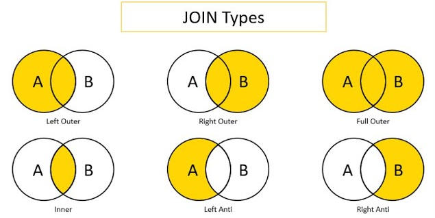

import moduleName1
import moduleName2Data Management
1 Install Modules
Terminal/command prompt:
#| eval: false
pip install numpy pandas matplotlib seabornJupyter:
#| eval: false
%pip install numpy pandas matplotlib seabornAnaconda:
#| eval: false
conda install numpy pandas matplotlib seaborn2 Import Modules
The default way to import a module in Python is:
For example:
import math
import random
import collections
import numpy as np
import pandas as pd
import matplotlib.pyplot as pp3 Import Data
Importing data using pandas takes syntax of the following form for .csv files:
data = pd.read_csv("filepath/filename.csv") # uses the pandas moduleBelow, I import a .csv file and save it into an object called mydata (you could call this object whatever you want):
mydata = pd.read_csv("https://osf.io/s6wrm/download") # uses the pandas module4 Save Data
Saving data in Python takes syntax of the following form for .csv files:
object.to_csv("filepath/filename.csv", index = False)For example:
mydata.to_csv("mydata.csv", index = False)5 Set a Seed
Set a seed (any number) to reproduce the results of analyses that involve random number generation.
random.seed(52242) # uses the random module6 Run a Python Script
To run a Python script, use the following syntax:
%run "filepath/filename.py"7 Render a Quarto (.qmd) File
To render a Quarto (.qmd) file, you would typically use the command line. Here is the equivalent command in a Python cell using the ! operator to run shell commands:
!quarto render "filepath/filename.qmd"8 Variable Names
To look at the names of variables in a dataframe, use the following syntax:
list(mydata.columns)['survived', 'pclass', 'sex', 'age', 'sibsp', 'parch', 'prediction']9 Logical Operators
Logical operators evaluate a condition for each value and yield values of True and False, corresponding to whether the evaluation for a given value met the condition.
9.1 Is Equal To: ==
mydata['survived'] == 10 True
1 True
2 False
3 False
4 False
...
1041 False
1042 False
1043 False
1044 False
1045 False
Name: survived, Length: 1046, dtype: bool9.2 Is Not Equal To: !=
mydata['survived'] != 10 False
1 False
2 True
3 True
4 True
...
1041 True
1042 True
1043 True
1044 True
1045 True
Name: survived, Length: 1046, dtype: bool9.2.1 Greater Than: >
mydata['parch'] > 10 False
1 True
2 True
3 True
4 True
...
1041 False
1042 False
1043 False
1044 False
1045 False
Name: parch, Length: 1046, dtype: bool9.3 Less Than: <
mydata['parch'] < 10 True
1 False
2 False
3 False
4 False
...
1041 True
1042 True
1043 True
1044 True
1045 True
Name: parch, Length: 1046, dtype: bool9.4 Greater Than or Equal To: >=
mydata['parch'] >= 10 False
1 True
2 True
3 True
4 True
...
1041 False
1042 False
1043 False
1044 False
1045 False
Name: parch, Length: 1046, dtype: bool9.5 Less Than or Equal To: <=
mydata['parch'] <= 10 True
1 False
2 False
3 False
4 False
...
1041 True
1042 True
1043 True
1044 True
1045 True
Name: parch, Length: 1046, dtype: bool9.6 Is in a Value of Another Vector: isin
anotherVector = [0,1]
mydata['parch'].isin(anotherVector)0 True
1 False
2 False
3 False
4 False
...
1041 True
1042 True
1043 True
1044 True
1045 True
Name: parch, Length: 1046, dtype: bool9.7 Is Not in a Value of Another Vector
In Python, you can use the ~ operator in combination with the isin method to check if values are not in another sequence.
~mydata['parch'].isin(anotherVector)0 False
1 True
2 True
3 True
4 True
...
1041 False
1042 False
1043 False
1044 False
1045 False
Name: parch, Length: 1046, dtype: bool9.8 Is Missing: isnull()
mydata['prediction'].isnull()0 False
1 False
2 False
3 False
4 False
...
1041 False
1042 False
1043 False
1044 False
1045 False
Name: prediction, Length: 1046, dtype: bool9.9 Is Not Missing: notnull()
mydata['prediction'].notnull()0 True
1 True
2 True
3 True
4 True
...
1041 True
1042 True
1043 True
1044 True
1045 True
Name: prediction, Length: 1046, dtype: bool9.10 And: &
mydata['prediction'].notnull() & (mydata['parch'] >= 1)0 False
1 True
2 True
3 True
4 True
...
1041 False
1042 False
1043 False
1044 False
1045 False
Length: 1046, dtype: bool9.11 Or: |
mydata['prediction'].isnull() | (mydata['parch'] >= 1)0 False
1 True
2 True
3 True
4 True
...
1041 False
1042 False
1043 False
1044 False
1045 False
Length: 1046, dtype: bool10 Subset
To subset a dataframe, you can use the loc and iloc accessors, or directly access the columns by their names.
dataframe.loc[rowsToKeep, columnsToKeep]
dataframe.iloc[rowIndices, columnIndices]You can subset by using any of the following:
- numeric indices of the rows/columns to keep (or drop)
- names of the rows/columns to keep (or drop)
- boolean arrays corresponding to which rows/columns to keep
10.1 One Variable
To subset one variable, use the following syntax:
mydata['age']0 29.00
1 0.92
2 2.00
3 30.00
4 25.00
...
1041 45.50
1042 14.50
1043 26.50
1044 27.00
1045 29.00
Name: age, Length: 1046, dtype: float6410.2 Particular Rows of One Variable
To subset one variable, use the following syntax:
mydata.loc[mydata['survived'] == 1, 'age']0 29.00
1 0.92
5 48.00
6 63.00
8 53.00
...
1010 63.00
1024 22.00
1030 38.00
1034 47.00
1040 15.00
Name: age, Length: 427, dtype: float6410.3 Particular Columns (Variables)
To subset particular columns/variables, use the following syntax:
subsetVars = ["survived", "age", "prediction"]
mydata[subsetVars]| survived | age | prediction | |
|---|---|---|---|
| 0 | 1 | 29.00 | 0.944861 |
| 1 | 1 | 0.92 | 0.783519 |
| 2 | 0 | 2.00 | 0.978557 |
| 3 | 0 | 30.00 | 0.516082 |
| 4 | 0 | 25.00 | 0.945537 |
| ... | ... | ... | ... |
| 1041 | 0 | 45.50 | 0.058135 |
| 1042 | 0 | 14.50 | 0.655366 |
| 1043 | 0 | 26.50 | 0.115592 |
| 1044 | 0 | 27.00 | 0.113589 |
| 1045 | 0 | 29.00 | 0.105877 |
1046 rows × 3 columns
Or, to drop columns:
dropVars = ["sibsp", "parch"]
mydata.drop(columns = dropVars)| survived | pclass | sex | age | prediction | |
|---|---|---|---|---|---|
| 0 | 1 | 1 | female | 29.00 | 0.944861 |
| 1 | 1 | 1 | male | 0.92 | 0.783519 |
| 2 | 0 | 1 | female | 2.00 | 0.978557 |
| 3 | 0 | 1 | male | 30.00 | 0.516082 |
| 4 | 0 | 1 | female | 25.00 | 0.945537 |
| ... | ... | ... | ... | ... | ... |
| 1041 | 0 | 3 | male | 45.50 | 0.058135 |
| 1042 | 0 | 3 | female | 14.50 | 0.655366 |
| 1043 | 0 | 3 | male | 26.50 | 0.115592 |
| 1044 | 0 | 3 | male | 27.00 | 0.113589 |
| 1045 | 0 | 3 | male | 29.00 | 0.105877 |
1046 rows × 5 columns
10.4 Particular Rows
To subset particular rows, you can use the iloc accessor or boolean indexing.
subsetRows = [0, 2, 4] # Python uses 0-based indexing
mydata.iloc[subsetRows]
mydata[mydata['survived'] == 1]| survived | pclass | sex | age | sibsp | parch | prediction | |
|---|---|---|---|---|---|---|---|
| 0 | 1 | 1 | female | 29.00 | 0 | 0 | 0.944861 |
| 1 | 1 | 1 | male | 0.92 | 1 | 2 | 0.783519 |
| 5 | 1 | 1 | male | 48.00 | 0 | 0 | 0.368893 |
| 6 | 1 | 1 | female | 63.00 | 1 | 0 | 0.739512 |
| 8 | 1 | 1 | female | 53.00 | 2 | 0 | 0.749240 |
| ... | ... | ... | ... | ... | ... | ... | ... |
| 1010 | 1 | 3 | female | 63.00 | 0 | 0 | 0.271834 |
| 1024 | 1 | 3 | male | 22.00 | 0 | 0 | 0.134332 |
| 1030 | 1 | 3 | female | 38.00 | 0 | 0 | 0.511020 |
| 1034 | 1 | 3 | female | 47.00 | 1 | 0 | 0.335634 |
| 1040 | 1 | 3 | female | 15.00 | 1 | 0 | 0.650893 |
427 rows × 7 columns
10.5 Particular Rows and Columns
To subset particular rows and columns, you can use the iloc accessor or boolean indexing.
subsetRows = [0, 2, 4] # Python uses 0-based indexing
subsetVars = ["survived", "age", "prediction"]
mydata.iloc[subsetRows][subsetVars]
mydata.loc[mydata['survived'] == 1, subsetVars]| survived | age | prediction | |
|---|---|---|---|
| 0 | 1 | 29.00 | 0.944861 |
| 1 | 1 | 0.92 | 0.783519 |
| 5 | 1 | 48.00 | 0.368893 |
| 6 | 1 | 63.00 | 0.739512 |
| 8 | 1 | 53.00 | 0.749240 |
| ... | ... | ... | ... |
| 1010 | 1 | 63.00 | 0.271834 |
| 1024 | 1 | 22.00 | 0.134332 |
| 1030 | 1 | 38.00 | 0.511020 |
| 1034 | 1 | 47.00 | 0.335634 |
| 1040 | 1 | 15.00 | 0.650893 |
427 rows × 3 columns
11 View Data
11.1 All Data
To view data in Python, you can simply print the dataframe:
print(mydata) survived pclass sex age sibsp parch prediction
0 1 1 female 29.00 0 0 0.944861
1 1 1 male 0.92 1 2 0.783519
2 0 1 female 2.00 1 2 0.978557
3 0 1 male 30.00 1 2 0.516082
4 0 1 female 25.00 1 2 0.945537
... ... ... ... ... ... ... ...
1041 0 3 male 45.50 0 0 0.058135
1042 0 3 female 14.50 1 0 0.655366
1043 0 3 male 26.50 0 0 0.115592
1044 0 3 male 27.00 0 0 0.113589
1045 0 3 male 29.00 0 0 0.105877
[1046 rows x 7 columns]Or, if you’re using a Jupyter notebook, you can just write the name of the dataframe:
mydata| survived | pclass | sex | age | sibsp | parch | prediction | |
|---|---|---|---|---|---|---|---|
| 0 | 1 | 1 | female | 29.00 | 0 | 0 | 0.944861 |
| 1 | 1 | 1 | male | 0.92 | 1 | 2 | 0.783519 |
| 2 | 0 | 1 | female | 2.00 | 1 | 2 | 0.978557 |
| 3 | 0 | 1 | male | 30.00 | 1 | 2 | 0.516082 |
| 4 | 0 | 1 | female | 25.00 | 1 | 2 | 0.945537 |
| ... | ... | ... | ... | ... | ... | ... | ... |
| 1041 | 0 | 3 | male | 45.50 | 0 | 0 | 0.058135 |
| 1042 | 0 | 3 | female | 14.50 | 1 | 0 | 0.655366 |
| 1043 | 0 | 3 | male | 26.50 | 0 | 0 | 0.115592 |
| 1044 | 0 | 3 | male | 27.00 | 0 | 0 | 0.113589 |
| 1045 | 0 | 3 | male | 29.00 | 0 | 0 | 0.105877 |
1046 rows × 7 columns
11.2 First 6 Rows/Elements
To view only the first six rows of a dataframe or elements of a series, use the following syntax:
mydata.head()
mydata['age'].head()0 29.00
1 0.92
2 2.00
3 30.00
4 25.00
Name: age, dtype: float6412 Data Characteristics
12.1 Data Structure
print(mydata.info())<class 'pandas.DataFrame'>
RangeIndex: 1046 entries, 0 to 1045
Data columns (total 7 columns):
# Column Non-Null Count Dtype
--- ------ -------------- -----
0 survived 1046 non-null int64
1 pclass 1046 non-null int64
2 sex 1046 non-null str
3 age 1046 non-null float64
4 sibsp 1046 non-null int64
5 parch 1046 non-null int64
6 prediction 1046 non-null float64
dtypes: float64(2), int64(4), str(1)
memory usage: 57.3 KB
None12.2 Data Dimensions
Number of rows and columns:
print(mydata.shape)(1046, 7)12.3 Number of Elements
print(len(mydata['age']))104612.4 Number of Missing Elements
print(mydata['age'].isnull().sum())012.5 Number of Non-Missing Elements
print(mydata['age'].notnull().sum())104613 Create New Variables
To create a new variable, you can directly assign a value to a new column in the dataframe.
mydata['newVar'] = NoneHere is an example of creating a new variable:
mydata['ID'] = range(1, len(mydata) + 1)14 Create a Dataframe
Here is an example of creating a dataframe:
mydata2 = pd.DataFrame({ # uses pandas module
'ID': list(range(1, 6)) + list(range(1047, 1052)),
'cat': np.random.choice([0, 1], 10) # uses numpy module
})
mydata2| ID | cat | |
|---|---|---|
| 0 | 1 | 1 |
| 1 | 2 | 1 |
| 2 | 3 | 1 |
| 3 | 4 | 1 |
| 4 | 5 | 1 |
| 5 | 1047 | 0 |
| 6 | 1048 | 0 |
| 7 | 1049 | 0 |
| 8 | 1050 | 1 |
| 9 | 1051 | 1 |
15 Recode Variables
Here is an example of recoding a variable:
mydata.loc[mydata['sex'] == "male", 'oldVar1'] = 0
mydata.loc[mydata['sex'] == "female", 'oldVar1'] = 1
mydata.loc[mydata['sex'] == "male", 'oldVar2'] = 1
mydata.loc[mydata['sex'] == "female", 'oldVar2'] = 0Recode multiple variables:
columns_to_recode = ['survived', 'pclass']
for col in columns_to_recode:
mydata[col] = mydata[col].map({1: 'Yes', 0: 'No'})
for col in columns_to_recode:
mydata[col] = mydata[col].map(lambda x: 1 if x in [0, 1] else 2)16 Rename Variables
mydata = mydata.rename(columns = {
'oldVar1': 'newVar1',
'oldVar2': 'newVar2'
})Using a dictionary of variable names:
varNamesFrom = ["oldVar1","oldVar2"]
varNamesTo = ["newVar1","newVar2"]
rename_dict = dict(zip(varNamesFrom, varNamesTo))
mydata = mydata.rename(columns = rename_dict)17 Convert the Types of Variables
One variable:
mydata['factorVar'] = mydata['sex'].astype('category')
mydata['numericVar'] = mydata['prediction'].astype(float)
mydata['integerVar'] = mydata['parch'].astype(int)
mydata['characterVar'] = mydata['sex'].astype(str)Multiple variables:
mydata[['age', 'parch', 'prediction']] = mydata[['age', 'parch', 'prediction']].astype(float)
mydata[mydata.loc[:, 'age':'parch'].columns] = mydata.loc[:, 'age':'parch'].astype(float)
# Convert all categorical columns to string
for col in mydata.select_dtypes('category').columns:
mydata[col] = mydata[col].astype(str)18 Merging/Joins
18.1 Overview
Merging (also called joining) merges two data objects using a shared set of variables called “keys.” The keys are the variable(s) that uniquely identify each row (i.e., they account for the levels of nesting). In some data objects, the key might be the participant’s ID (e.g., participantID). However, some data objects have multiple keys. For instance, in long form data objects, each participant may have multiple rows corresponding to multiple timepoints. In this case, the keys are participantID and timepoint. If a participant has multiple rows corresponding to timepoints and measures, the keys are participantID, timepoint, and measure. In general, each row should have a value on each of the keys; there should be no missingness in the keys.
To merge two objects, the keys must be present in both objects. The keys are used to merge the variables in object 1 (x) with the variables in object 2 (y). Different merge types select different rows to merge.
Note: if the two objects include variables with the same name (apart from the keys), Python will not know how you want each to appear in the merged object. So, it will add a suffix (e.g., _x, _y) to each common variable to indicate which object (i.e., object x or object y) the variable came from, where object x is the first object—i.e., the object to which object y (the second object) is merged. In general, apart from the keys, you should not include variables with the same name in two objects to be merged. To prevent this, either remove or rename the shared variable in one of the objects, or include the shared variable as a key. However, as described above, you should include it as a key only if it uniquely identifies each row in terms of levels of nesting.
18.2 Data Before Merging
Here are the data in the mydata object:
print(mydata)
print(mydata.shape) survived pclass sex age sibsp parch prediction newVar ID \
0 2 2 female 29.00 0.0 0.0 0.944861 None 1
1 2 2 male 0.92 1.0 2.0 0.783519 None 2
2 2 2 female 2.00 1.0 2.0 0.978557 None 3
3 2 2 male 30.00 1.0 2.0 0.516082 None 4
4 2 2 female 25.00 1.0 2.0 0.945537 None 5
... ... ... ... ... ... ... ... ... ...
1041 2 2 male 45.50 0.0 0.0 0.058135 None 1042
1042 2 2 female 14.50 1.0 0.0 0.655366 None 1043
1043 2 2 male 26.50 0.0 0.0 0.115592 None 1044
1044 2 2 male 27.00 0.0 0.0 0.113589 None 1045
1045 2 2 male 29.00 0.0 0.0 0.105877 None 1046
newVar1 newVar2 factorVar numericVar integerVar characterVar
0 1.0 0.0 female 0.944861 0 female
1 0.0 1.0 male 0.783519 2 male
2 1.0 0.0 female 0.978557 2 female
3 0.0 1.0 male 0.516082 2 male
4 1.0 0.0 female 0.945537 2 female
... ... ... ... ... ... ...
1041 0.0 1.0 male 0.058135 0 male
1042 1.0 0.0 female 0.655366 0 female
1043 0.0 1.0 male 0.115592 0 male
1044 0.0 1.0 male 0.113589 0 male
1045 0.0 1.0 male 0.105877 0 male
[1046 rows x 15 columns]
(1046, 15)Here are the data in the mydata2 object:
print(mydata2)
print(mydata2.shape) ID cat
0 1 1
1 2 1
2 3 1
3 4 1
4 5 1
5 1047 0
6 1048 0
7 1049 0
8 1050 1
9 1051 1
(10, 2)18.3 Types of Joins
18.3.1 Visual Overview of Join Types
Below is a visual that depicts various types of merges/joins. Object x is the circle labeled as A. Object y is the circle labeled as B. The area of overlap in the Venn diagram indicates the rows on the keys that are shared between the two objects (e.g., participantID values 1, 2, and 3). The non-overlapping area indicates the rows on the keys that are unique to each object (e.g., participantID values 4, 5, and 6 in Object x and values 7, 8, and 9 in Object y). The shaded yellow area indicates which rows (on the keys) are kept in the merged object from each of the two objects, when using each of the merge types. For instance, a left outer join keeps the shared rows and the rows that are unique to object x, but it drops the rows that are unique to object y.

Image source: Predictive Hacks (archived at: https://perma.cc/WV7U-BS68)
18.3.2 Full Outer Join
A full outer join includes all rows in \(x\) or \(y\). It returns columns from \(x\) and \(y\). Here is how to merge two data frames using a full outer join (i.e., “full join”):
fullJoinData = pd.merge(mydata, mydata2, on = "ID", how = "outer")
print(fullJoinData)
print(fullJoinData.shape) survived pclass sex age sibsp parch prediction newVar ID \
0 2.0 2.0 female 29.00 0.0 0.0 0.944861 None 1
1 2.0 2.0 male 0.92 1.0 2.0 0.783519 None 2
2 2.0 2.0 female 2.00 1.0 2.0 0.978557 None 3
3 2.0 2.0 male 30.00 1.0 2.0 0.516082 None 4
4 2.0 2.0 female 25.00 1.0 2.0 0.945537 None 5
... ... ... ... ... ... ... ... ... ...
1046 NaN NaN NaN NaN NaN NaN NaN NaN 1047
1047 NaN NaN NaN NaN NaN NaN NaN NaN 1048
1048 NaN NaN NaN NaN NaN NaN NaN NaN 1049
1049 NaN NaN NaN NaN NaN NaN NaN NaN 1050
1050 NaN NaN NaN NaN NaN NaN NaN NaN 1051
newVar1 newVar2 factorVar numericVar integerVar characterVar cat
0 1.0 0.0 female 0.944861 0.0 female 1.0
1 0.0 1.0 male 0.783519 2.0 male 1.0
2 1.0 0.0 female 0.978557 2.0 female 1.0
3 0.0 1.0 male 0.516082 2.0 male 1.0
4 1.0 0.0 female 0.945537 2.0 female 1.0
... ... ... ... ... ... ... ...
1046 NaN NaN NaN NaN NaN NaN 0.0
1047 NaN NaN NaN NaN NaN NaN 0.0
1048 NaN NaN NaN NaN NaN NaN 0.0
1049 NaN NaN NaN NaN NaN NaN 1.0
1050 NaN NaN NaN NaN NaN NaN 1.0
[1051 rows x 16 columns]
(1051, 16)18.3.3 Left Outer Join
A left outer join includes all rows in \(x\). It returns columns from \(x\) and \(y\). Here is how to merge two data frames using a left outer join (“left join”):
leftJoinData = pd.merge(mydata, mydata2, on = "ID", how = "left")
print(leftJoinData)
print(leftJoinData.shape) survived pclass sex age sibsp parch prediction newVar ID \
0 2 2 female 29.00 0.0 0.0 0.944861 None 1
1 2 2 male 0.92 1.0 2.0 0.783519 None 2
2 2 2 female 2.00 1.0 2.0 0.978557 None 3
3 2 2 male 30.00 1.0 2.0 0.516082 None 4
4 2 2 female 25.00 1.0 2.0 0.945537 None 5
... ... ... ... ... ... ... ... ... ...
1041 2 2 male 45.50 0.0 0.0 0.058135 None 1042
1042 2 2 female 14.50 1.0 0.0 0.655366 None 1043
1043 2 2 male 26.50 0.0 0.0 0.115592 None 1044
1044 2 2 male 27.00 0.0 0.0 0.113589 None 1045
1045 2 2 male 29.00 0.0 0.0 0.105877 None 1046
newVar1 newVar2 factorVar numericVar integerVar characterVar cat
0 1.0 0.0 female 0.944861 0 female 1.0
1 0.0 1.0 male 0.783519 2 male 1.0
2 1.0 0.0 female 0.978557 2 female 1.0
3 0.0 1.0 male 0.516082 2 male 1.0
4 1.0 0.0 female 0.945537 2 female 1.0
... ... ... ... ... ... ... ...
1041 0.0 1.0 male 0.058135 0 male NaN
1042 1.0 0.0 female 0.655366 0 female NaN
1043 0.0 1.0 male 0.115592 0 male NaN
1044 0.0 1.0 male 0.113589 0 male NaN
1045 0.0 1.0 male 0.105877 0 male NaN
[1046 rows x 16 columns]
(1046, 16)18.3.4 Right Outer Join
A right outer join includes all rows in \(y\). It returns columns from \(x\) and \(y\). Here is how to merge two data frames using a right outer join (“right join”):
rightJoinData = pd.merge(mydata, mydata2, on = "ID", how = "right")
print(rightJoinData)
print(rightJoinData.shape) survived pclass sex age sibsp parch prediction newVar ID \
0 2.0 2.0 female 29.00 0.0 0.0 0.944861 None 1
1 2.0 2.0 male 0.92 1.0 2.0 0.783519 None 2
2 2.0 2.0 female 2.00 1.0 2.0 0.978557 None 3
3 2.0 2.0 male 30.00 1.0 2.0 0.516082 None 4
4 2.0 2.0 female 25.00 1.0 2.0 0.945537 None 5
5 NaN NaN NaN NaN NaN NaN NaN NaN 1047
6 NaN NaN NaN NaN NaN NaN NaN NaN 1048
7 NaN NaN NaN NaN NaN NaN NaN NaN 1049
8 NaN NaN NaN NaN NaN NaN NaN NaN 1050
9 NaN NaN NaN NaN NaN NaN NaN NaN 1051
newVar1 newVar2 factorVar numericVar integerVar characterVar cat
0 1.0 0.0 female 0.944861 0.0 female 1
1 0.0 1.0 male 0.783519 2.0 male 1
2 1.0 0.0 female 0.978557 2.0 female 1
3 0.0 1.0 male 0.516082 2.0 male 1
4 1.0 0.0 female 0.945537 2.0 female 1
5 NaN NaN NaN NaN NaN NaN 0
6 NaN NaN NaN NaN NaN NaN 0
7 NaN NaN NaN NaN NaN NaN 0
8 NaN NaN NaN NaN NaN NaN 1
9 NaN NaN NaN NaN NaN NaN 1
(10, 16)18.3.5 Inner Join
An inner join includes all rows that are in both \(x\) and \(y\). An inner join will return one row of \(x\) for each matching row of \(y\), and can duplicate values of records on either side (left or right) if \(x\) and \(y\) have more than one matching record. It returns columns from \(x\) and \(y\). Here is how to merge two data frames using an inner join:
innerJoinData = pd.merge(mydata, mydata2, on = "ID", how = "inner")
print(innerJoinData)
print(innerJoinData.shape) survived pclass sex age sibsp parch prediction newVar ID \
0 2 2 female 29.00 0.0 0.0 0.944861 None 1
1 2 2 male 0.92 1.0 2.0 0.783519 None 2
2 2 2 female 2.00 1.0 2.0 0.978557 None 3
3 2 2 male 30.00 1.0 2.0 0.516082 None 4
4 2 2 female 25.00 1.0 2.0 0.945537 None 5
newVar1 newVar2 factorVar numericVar integerVar characterVar cat
0 1.0 0.0 female 0.944861 0 female 1
1 0.0 1.0 male 0.783519 2 male 1
2 1.0 0.0 female 0.978557 2 female 1
3 0.0 1.0 male 0.516082 2 male 1
4 1.0 0.0 female 0.945537 2 female 1
(5, 16)18.3.6 Cross Join
A cross join combines each row in \(x\) with each row in \(y\).
rater = pd.DataFrame({'rater': ["Mother","Father","Teacher"]})
timepoint = pd.DataFrame({'timepoint': range(1, 4)})
crossJoinData = rater.assign(key = 1).merge(timepoint.assign(key = 1), on = 'key').drop('key', axis = 1)
print(crossJoinData)
print(crossJoinData.shape) rater timepoint
0 Mother 1
1 Mother 2
2 Mother 3
3 Father 1
4 Father 2
5 Father 3
6 Teacher 1
7 Teacher 2
8 Teacher 3
(9, 2)19 Long to Wide
import seaborn as sns
# Load the iris dataset
iris = sns.load_dataset('iris')
# Melt the dataset to a long format
iris_long = iris.melt(
id_vars = 'species',
var_name = 'measurement',
value_name = 'value')
print(iris_long)
# Pivot the dataset to a wide format
iris_wide = iris_long.pivot_table(
index = 'species',
columns = 'measurement',
values = 'value')
print(iris_wide) species measurement value
0 setosa sepal_length 5.1
1 setosa sepal_length 4.9
2 setosa sepal_length 4.7
3 setosa sepal_length 4.6
4 setosa sepal_length 5.0
.. ... ... ...
595 virginica petal_width 2.3
596 virginica petal_width 1.9
597 virginica petal_width 2.0
598 virginica petal_width 2.3
599 virginica petal_width 1.8
[600 rows x 3 columns]
measurement petal_length petal_width sepal_length sepal_width
species
setosa 1.462 0.246 5.006 3.428
versicolor 4.260 1.326 5.936 2.770
virginica 5.552 2.026 6.588 2.97420 Wide to Long
Original data:
import seaborn as sns
# Load the iris dataset
iris = sns.load_dataset('iris')
print(iris) sepal_length sepal_width petal_length petal_width species
0 5.1 3.5 1.4 0.2 setosa
1 4.9 3.0 1.4 0.2 setosa
2 4.7 3.2 1.3 0.2 setosa
3 4.6 3.1 1.5 0.2 setosa
4 5.0 3.6 1.4 0.2 setosa
.. ... ... ... ... ...
145 6.7 3.0 5.2 2.3 virginica
146 6.3 2.5 5.0 1.9 virginica
147 6.5 3.0 5.2 2.0 virginica
148 6.2 3.4 5.4 2.3 virginica
149 5.9 3.0 5.1 1.8 virginica
[150 rows x 5 columns]Data in long form, transformed from wide form using pandas:
iris_long = iris.melt(
id_vars = 'species',
var_name = 'measurement',
value_name = 'value')
print(iris_long) species measurement value
0 setosa sepal_length 5.1
1 setosa sepal_length 4.9
2 setosa sepal_length 4.7
3 setosa sepal_length 4.6
4 setosa sepal_length 5.0
.. ... ... ...
595 virginica petal_width 2.3
596 virginica petal_width 1.9
597 virginica petal_width 2.0
598 virginica petal_width 2.3
599 virginica petal_width 1.8
[600 rows x 3 columns]21 Average Ratings Across Coders
Create data with multiple coders:
# Create a dataframe with multiple coders
idWaveCoder = pd.DataFrame(np.array(np.meshgrid(np.arange(1, 101), np.arange(1, 4), np.arange(1, 4))).T.reshape(-1,3), columns=['id', 'wave', 'coder'])
# Add positiveAffect and negativeAffect columns with random values
np.random.seed(0)
idWaveCoder['positiveAffect'] = np.random.randn(len(idWaveCoder))
idWaveCoder['negativeAffect'] = np.random.randn(len(idWaveCoder))
# Sort the dataframe
idWaveCoder = idWaveCoder.sort_values(['id', 'wave', 'coder'])
print(idWaveCoder) id wave coder positiveAffect negativeAffect
0 1 1 1 1.764052 -1.461733
300 1 1 2 -1.306527 -0.896370
600 1 1 3 -1.550429 0.013240
1 1 2 1 0.400157 -0.683440
301 1 2 2 1.658131 -1.962732
.. ... ... ... ... ...
598 100 2 2 -0.930157 -1.079343
898 100 2 3 2.594425 -0.470742
299 100 3 1 0.370056 0.589704
599 100 3 2 -0.178589 -0.114226
899 100 3 3 -0.404032 0.272796
[900 rows x 5 columns]Average data across coders:
# Group by id and wave, then calculate the mean for each group
idWave = idWaveCoder.groupby(['id', 'wave']).mean().reset_index()
# Drop the coder column
idWave = idWave.drop(columns=['coder'])
print(idWave) id wave positiveAffect negativeAffect
0 1 1 -0.364301 -0.781621
1 1 2 0.825202 -0.922706
2 1 3 -0.027932 0.763808
3 2 1 0.599606 0.082882
4 2 2 0.375993 -0.962184
.. ... ... ... ...
295 99 2 1.171361 0.600051
296 99 3 -0.409619 -0.064589
297 100 1 -0.391788 -0.219040
298 100 2 0.421606 -1.187322
299 100 3 -0.070855 0.249425
[300 rows x 4 columns]22 Session Info
import sys
print(sys.version)3.14.7 (main, Aug 6 2026, 02:19:46) [GCC 13.3.0]